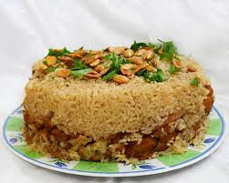
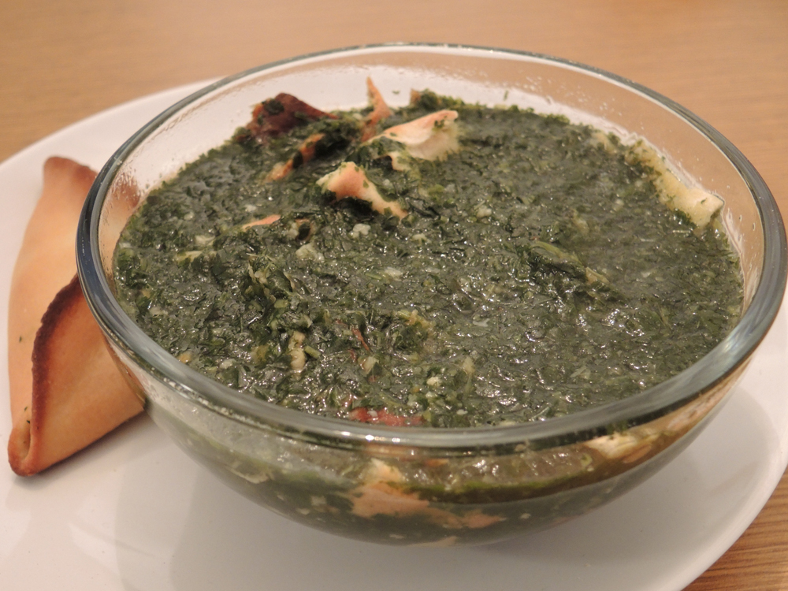
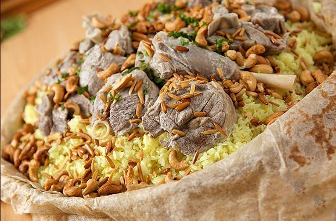

Makloubeh (which literally means upside down) is a popular Palestinian one pot rice, spice and vegetable dish.You can think of it as a torte or a savory counter part to a pineapple upside down cake because of the way that it is cooked and presented. Usually the vegetables, meat/chicken, rice and spices are arranged in layers and cooked in a pot. When it is time to serve the maqluba the pot is inverted onto the serving plate (a nerve racking step for beginners) and when the pot is lefted a beautiful layered maqluba is revealed to the ooh and aah of everyone :) Though the maqluba first started out in Palestine (and is to this day one of the most popular traditional Palestinian recipes), it is now made throughout Syria, Jordan, Palestine and Lebanon featuring different vegetables.
The Standard Molokhia dish in the Levant is prepared by cooking a meat of some sort in a separate pot by boiling. Later onions, and garlic cooked to a simmer, then adding water and chicken stock cubes (well known brand is Maggi Cubes) as a broth. After boiling, the cooked chicken or meat and Molokhia leaves are added and further cooked another 15 minutes. Palestinians will serve Molokhia on a bed of rice topped with vermicelli noodles, and lemon juice and flat bread on the side. The Palestinians Bedouins; badawī) have an old tradition of cooking a different version of the dish. A whole chicken is cut open, the intestines removed, and the innards stuffed with herbs, spices and raw rice then sewn shut with thick thread. The chicken is then boiled to create the broth for the Molokhia soup which, after preparation, is served as five separate components: The Molokhia soup, Arabic flat bread, the chicken (stuffed with flavored rice), additional plain rice and a small bowl with a mixture of lemon juice and sliced chilli. The soup is mixed with rice and lemon juice according to taste, while the chicken is eaten on a separate plate.
Mansaf is a traditional Levantine dish made of lamb cooked in a sauce of fermented dried yogurt and served with rice or bulgur. It is the national dish of Jordan, and can also be found in Palestine, Iraq, Syria and Saudi Arabia. The name of the dish comes from the term "large tray" or "large dish" The original pastoralist Bedouin mansaf underwent significant changes in the 20th century. The dish is said to originally have been made with simply meat (camel or lamb), meat broth or ghee (clarified butter) and bread.[4] Following the popularization of rice in northern Jordan in the 1920s, rice gradually was introduced into the dish, at first mixed with bulgur, and later on its own, until the dish reached its modern incarnation of being based on white rice. Similarly, the jamid sauce is a recent development, as the Bedouins did not historically feature jamid in their cooked dishes until their modern sedentarization.
